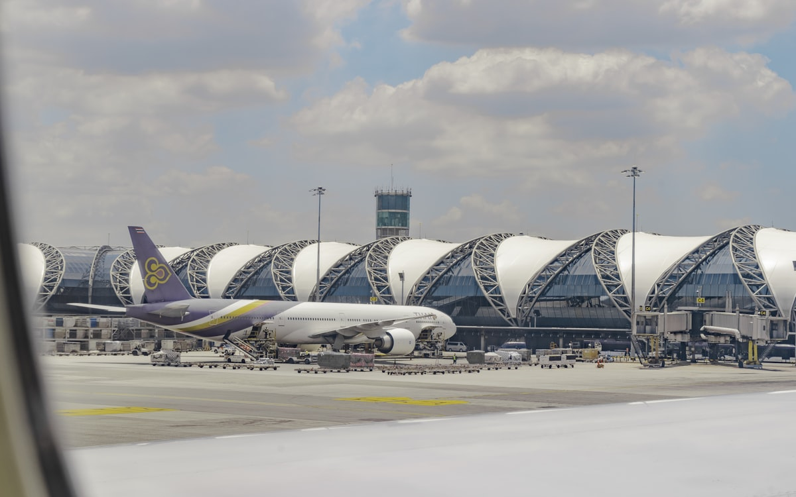

Day 1
6/25 周四
初到曼谷的第一个晚上
第一个东南亚夜晚、7-11 仪式
📋 今日导览
这天没有紧凑的行程，重点是「适应」。你会在下午抵达素万那普机场，办完入境、提领行李、换好泰铢，再搭 Grab 到 Sathorn 区的 ASAI 酒店。曼谷的热气和气味会在出机场的那一刻包围你——这是东南亚给每位初访者的第一个拥抱。晚上不要安排任何景点，酒店附近找东西吃，然后去 7-11 完成「仪式」：挑一瓶没喝过的饮料、选一个没看过的零食。这些小事会成为你们之后聊起曼谷时，最先浮现的画面。
TDAC QR Code 必须预先填好，排队前把手机亮度调到最高，海关官员会直接扫描。
入境审查可能问住宿地址，准备好「ASAI Bangkok Sathorn, 195 N Sathon Rd」。
7-11 仪式是双人成行第一个共同记忆，建议买泰式奶茶 + 一包没看过的零食，边吃边讨论明天的行程。泰国 7-11 是全球密度最高的便利店之一，不仅能买零食饮料，还能缴水电费、打印、寄快递、买电影票，几乎等同「社区服务中心」。
15:25 - 16:30
素万那普机场入境
📌 TDAC QR Code + 护照准备好
🛬 素万那普机场入境完整流程
素万那普（BKK）是曼谷主要国际机场，入境流程通常需要 45-75 分钟，雨季旺季可能更长。文件备妥最重要，不要到现场才翻包包。
- 落地后：跟着「Immigration」指标走，不要跟着「Transit」走。T1 入境大厅在 2F。
- TDAC 准备：排队前把手机亮度调最高，QR Code 预先开启。海关官员会扫描 QR Code，不需要打印。
- 入境审查：递交护照 + TDAC QR Code。官员可能问住宿地址（ASAI Bangkok Sathorn, 195 N Sathon Rd）和停留天数（8 天）。
- 行李提领：入境后到 B 层提领行李，注意看航班号码对应的转盘号码。
- 换汇时机：提领行李后，在 B 层找 SuperRich 或 Vasu Exchange 换 5,000 THB，不要在入境大厅的小亭换。
- 诈骗警示：出关后会有人主动搭话说「Taxi? Taxi?」或「Special price」，一律不理，直接走向 Level 1 Exit 4 叫 Grab。
16:30 - 17:45
机场 → ASAI Bangkok Sathorn 酒店
🚗 Grab（Level 1 Exit 4 官方上车点）
💰 约 300-450 THB
📌 雨季预留缓冲时间
🚗 机场 Grab 完整操作指南
从机场到 ASAI Sathorn 约 30-45 公里，正常车程 45-60 分钟，雨季塞车可能 90 分钟以上。Grab 是最安全可靠的选择。
- 上车点：出关后搭电梯到 Level 1（地面层），往 Exit 4 方向走，看到 Grab 黄绿色标志的服务台，在 Pickup Point A 或 B 等候。
- App 操作：开启 Grab → 输入目的地「ASAI Bangkok Sathorn」→ 选 GrabCar（标准）→ 确认上车点是 Level 1 Exit 4 → 叫车。
- 给司机信息：I am at Suvarnabhumi Airport, Level 1, Exit 4, Grab Pickup Point A/B, near the Grab booth.
- 车资说明：300-450 THB 含高速公路费（Expressway toll 约 75 THB），司机会问要不要走高速，建议说 Yes 节省时间。
- 雨季注意：6 月下午是曼谷最容易塞车的时段，预留 90 分钟缓冲。
- Grab 失败备案：若 Grab 等待超过 15 分钟，切换 Bolt App 重新叫车。
17:45 - 18:45
酒店 Check-in + 洗澡换衣
🏨 ASAI Bangkok Sathorn 酒店说明
ASAI Bangkok Sathorn 是 Dusit 集团旗下的设计型精品酒店，位于 Silom/Sathorn 商业区，BTS（曼谷空中捷运系统，类似上海的地铁/深圳的轻轨） Saint Louis 站步行 5 分钟。整趟旅行的固定基地。
- 地址：195 N Sathon Rd, Si Lom, Bang Rak, Bangkok 10500
- Check-in 时间：正式 check-in 时间 14:00，若提早到可寄放行李。
- 设施：屋顶泳池、健身房、1-2-3 by ASAI 餐厅（早餐）、The Kitchen（全日餐厅）。
- 交通：BTS Saint Louis Exit 1 步行 5 分钟；MRT Lumphini 步行 10 分钟。
- 周边：步行范围内有 7-11（24 小时）、Prachak 烧鸭、Convent Road 餐厅街。
- 重要提醒：Check-in 时确认房间朝向（高楼层城市景观较好）；询问早餐时间（通常 07:00-10:00）。

19:00 之后
触发式决策：晚餐 + 7-11 仪式
🍜 沙吞近距离（Prachak 烧鸭 / 海南鸡饭）
💰 200-400 THB
✨ 三个小任务：一起逛 7-11 挑饮料、各选一个没看过的零食、试一次 BTS 转乘（Saint Louis → Sala Daeng 来回）
🍜 第一晚触发式决策指南
第一晚的设计原则是「轻松适应」，不跑夜市、不上 rooftop、不跨区。根据抵达酒店的时间决定晚间行程。
- 18:00 前到酒店（最乐观）：BTS Saint Louis → Phrom Phong，Emsphere B1 美食街晚餐，21:00 前回酒店。
- 18:00-19:00 到酒店（默认情境）：步行到 Convent Road 或 Surawong，Prachak 烧鸭（店内空调）或海南鸡饭，再逛 7-11。
- 19:00 后到酒店：酒店 The Kitchen 简餐 + 酒店旁 7-11，不出远门。
- Prachak 烧鸭：Convent Road 上的老店，泰式烧鸭饭约 120-180 THB，有空调，不需要排队。
- 7-11 仪式三件事：① 各自挑明天路上喝的饮料（椰子水、泰式红茶、Oishi 绿茶）② 各选一个没看过的零食 ③ 试一次 BTS（Saint Louis → Sala Daeng 来回，熟悉闸口和 Rabbit Card——泰國 BTS 交通卡，類似中國的城市交通卡或八達通，可直接刷卡進站）。